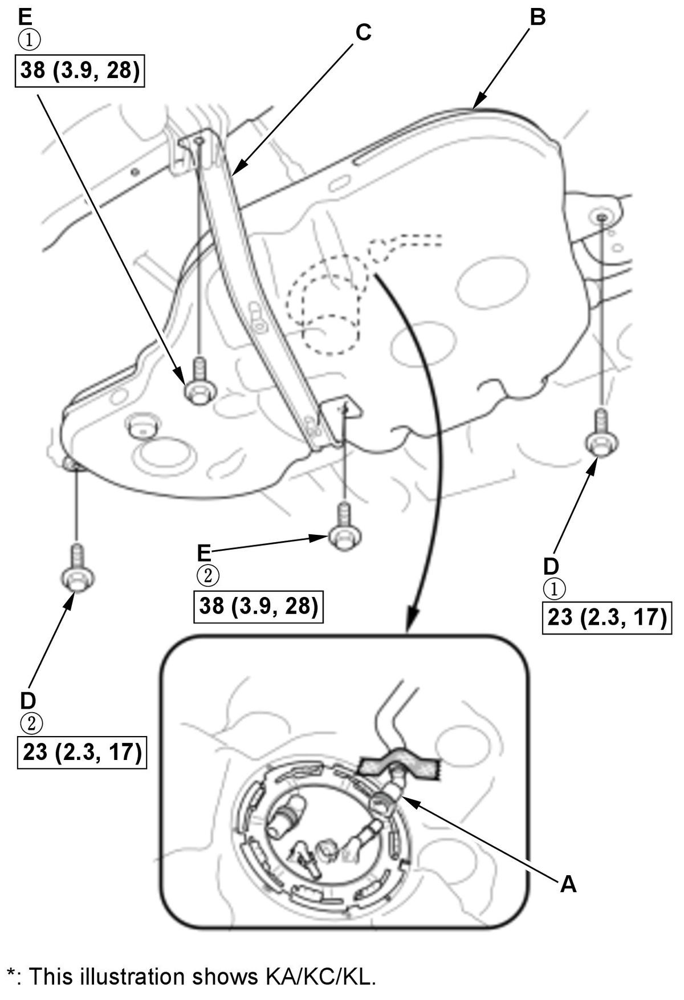
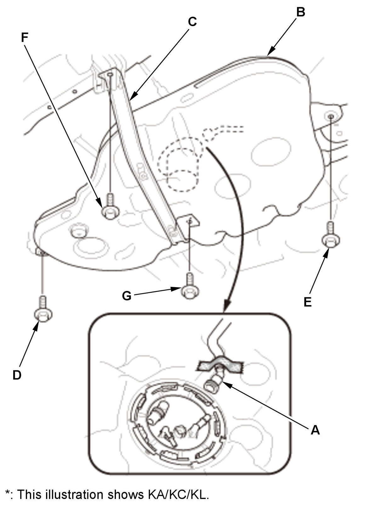
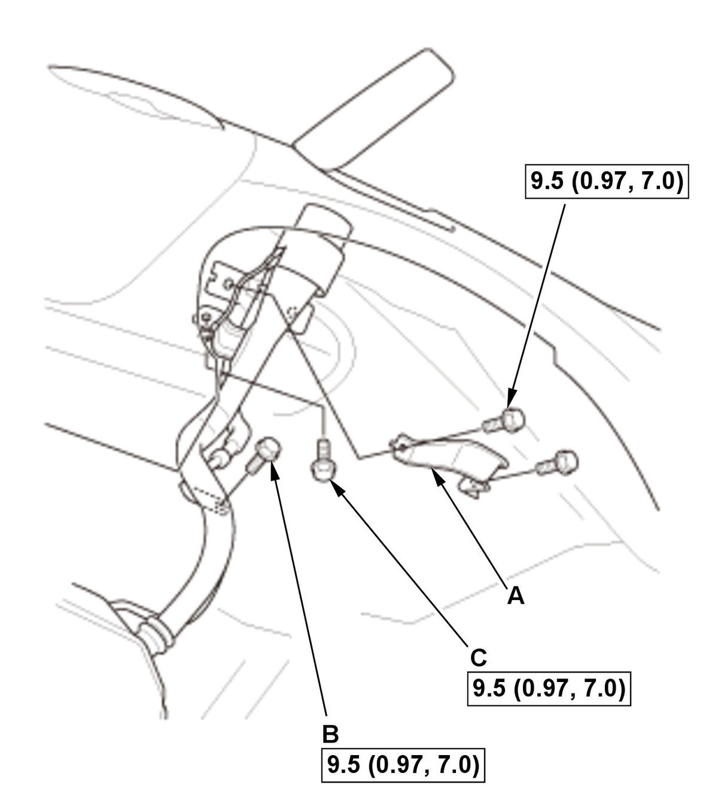

Fuel Tank Removal and Installation (Except L15BY): Installation
WARNING:
Flammable - Keep Fire Away
NOTE:
- How to read the torque specifications .
- Refer to the Fuel and Emissions Systems Service Precautions before disconnecting/connecting the fuel line.
- Fuel Tank Unit - Temporarily Install
1. If needed, Install the fuel tank unit with the O-ring that had used on them .
NOTE: When installing the fuel tank unit cam lock ring (A) using the fuel sender wrench (B), temporarily set the positioning edge (C) of the fuel tank at the fuel tank unit cam lock ring tabs (D) on the fuel tank unit cam lock ring as shown. - Fuel Tank Assembly - Install (Except 5-door)Fig 1: Fuel Tank Assembly Components And Bolts With Tightening Sequence And Torque Specifications (Except L15BY, Except 5-Door)

 Courtesy of HONDA, U.S.A., INC.HONDA, U.S.A., INC.
Courtesy of HONDA, U.S.A., INC.HONDA, U.S.A., INC.1. USA/Canada/California Models: Tape the fuel tank vapor recirculation tube (A) as shown. 2. Place a transmission jack under the fuel tank (B) and carefully raise the fuel tank into position.
3. Install the fuel tank and the strap (C).
NOTE: Tighten the fuel tank mounting bolts and the strap mounting bolts in the following procedure.
- Loosely install the fuel tank mounting bolts (D).
- Tighten the fuel tank mounting bolts to the specified torque in the numbered sequence shown.
- Loosely install the strap mounting bolts (E).
- Tighten the strap mounting bolts to the specified torque in the numbered sequence shown.
4. Install the fuel fill pipe bracket (A), the fuel fill pipe mounting bolt (B), and the ground cable terminal bolt (C). - Fuel Tank Assembly - Install (5-door)


Courtesy of HONDA, U.S.A., INC.HONDA, U.S.A., INC.1. Tape the fuel tank vapor recirculation tube (A) as shown. 2. Place a transmission jack under the fuel tank (B) and carefully raise the fuel tank into position.
3. Install the fuel tank and the strap (C).
NOTE: Tighten the fuel tank mounting bolts and the strap mounting bolts in the following procedure.
- Loosely install the right side fuel tank mounting bolt (D).
- Tighten the left side fuel tank mounting bolt (E) to 24 N.m (2.4 kgf.m, 18 lbf.ft).
- Tighten the right side fuel tank mounting bolt to 24 N.m (2.4 kgf.m, 18 lbf.ft).
- Loosely install the front side strap mounting bolt (F).
- Tighten the rear side strap mounting bolt (G) to 38 N.m (3.9 kgf.m, 28 lbf.ft).
- Tighten the front side strap mounting bolt to 38 N.m (3.9 kgf.m, 28 lbf.ft).
4. Install the fuel fill pipe bracket (A), the fuel fill pipe mounting bolt (B), and the ground cable terminal bolt (C). - Rear Subframe, Rear Trailing Arm, and Rear Brake Caliper Assembly - Install
1. Install the rear subframe with the rear trailing arms, do the following procedures while installing the indicated part(s) from both sides.
- The rear subframe bolts (A)
and the rear trailing arm bolts (B)
.
NOTE:
-
- Place a transmission jack under the rear subframe.
- Pay attention to prevent damage to the connector (C).
- Connect the connector(s).
- The bracket(s) (D).
- The rear damper upper bolts (E) .
- The rear brake caliper bracket bolts (F) .
- The rear upper arm bolt (G), the rear upper arm nut (H) , and the rear wheel speed sensor bolt (J) .
- The wheel speed sensor/electric parking brake harness bracket bolt (K) and the rear brake hose bracket bolt (L) .
- The rear subframe bolts (A)
and the rear trailing arm bolts (B)
.
- Connector (Adaptive Damper System) - Connect (If Equipped)
- Fuel Fill Door Adapter - Install
- Left Rear Inner Fender - Install
- Rear Wheel - Install
- Fuel Vent Tube B - Connect (Mexico Models)
NOTE: Make sure the hose clamps are properly positioned and tightened .
- Fuel Tank Heat Baffle - Install (Under Fuel Tank)
- Front Floor Undercover - Install
- Muffler - Install
- Fuel Tank Unit - Install
1. Replace the new fuel tank unit cam lock ring (A) and the new O-ring (B), do the following procedures. - Refer to the "Fuel Tank Unit Cam Lock Ring - Unlock" on the Fuel Tank Unit Removal and Installation.
2. USA/Canada/California Models: Connect the fuel vent tube (C) and fuel tank vapor recirculation tube (D), do the following procedures.
- Refer to the "Fuel Vent Tube and Fuel Tank Vapor Recirculation Tube - Connect (USA/Canada/California Models)" on the Fuel Tank Unit Removal and Installation.
3. Lock the fuel tank unit cam lock ring, do the following procedures.
- Refer to the "Fuel Tank Unit Cam Lock Ring - Lock" on the Fuel Tank Unit Removal and Installation.
- Fuel Leak - Check
USA/Canada/California Models Mexico Models
1. Connect the quick-connect fitting (A) 2. Connect the connector (B).
3. Turn the vehicle to the ON mode, but do not start the engine. After the fuel pump runs for about 2 seconds, the fuel line will be pressurized. Repeat this two or three times, then check for fuel leakage.
4. USA/Canada/California Models: If equipped, install the fuel connector cover (C).
5. Install the access panel (D) to the floor.
- Rear Seat-Back and Rear Seat-Cushion - Install
- Wheel Alignment - Adjustment